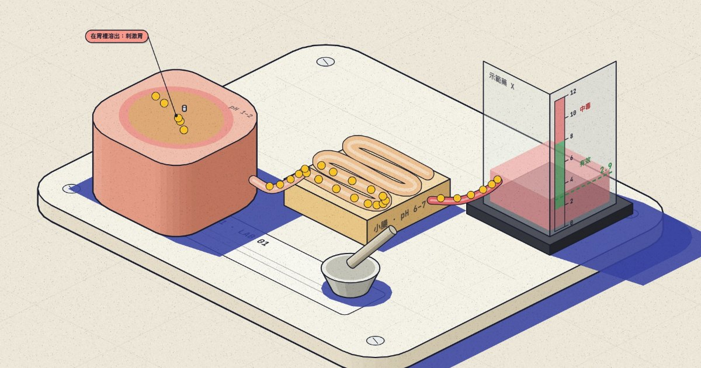
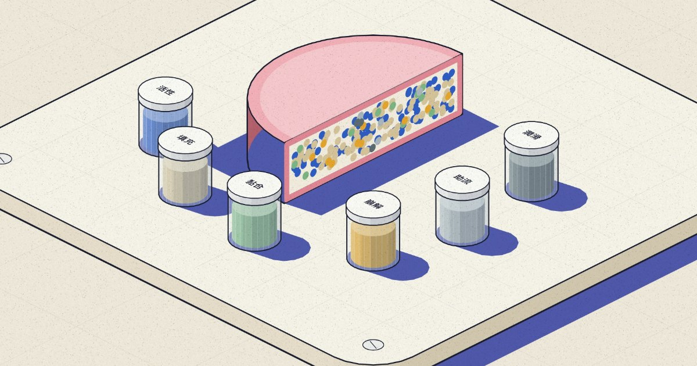
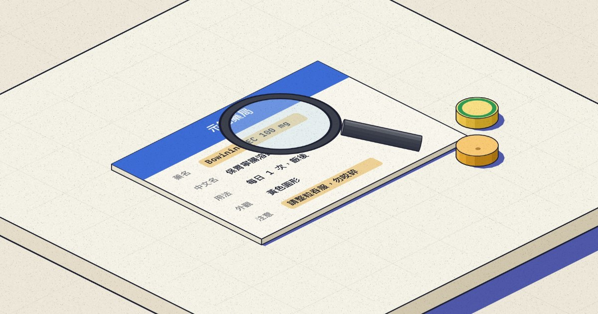
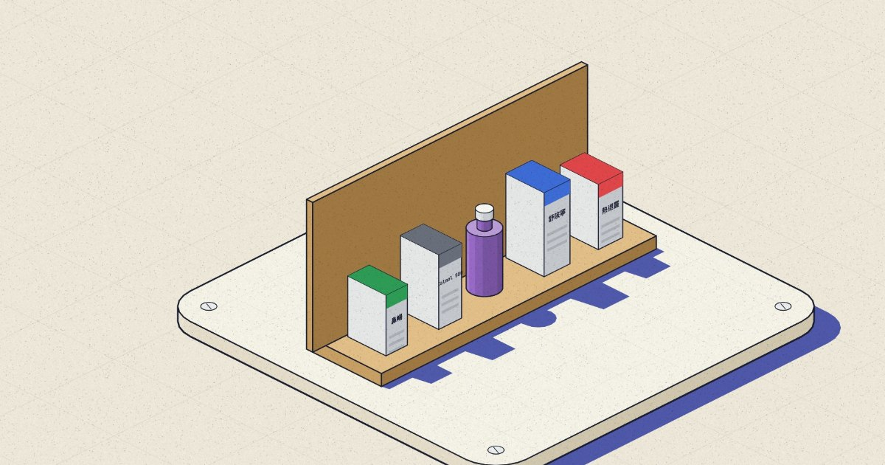
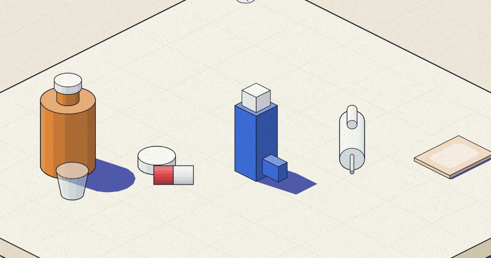

學習路線/階段 1
階段 1 / 6，第 1–2 週
藥是什麼
你的目標：弄懂一顆藥裡面有什麼，以及同一種成分為什麼會做成不同的樣子。
很多人以為藥錠就是「一顆藥」。其實一顆 500 毫克的錠劑裡，真正有作用的成分可能只佔一部分，其餘是讓它成形、崩解、保護胃或控制釋放速度的材料。劑型決定了藥在你身體裡怎麼走。
本階段的 Lab

Lab 01 新
同一種藥，三種樣子：速釋、腸溶、緩釋
同一個成分做成速釋錠、腸溶錠、緩釋錠，在胃和小腸裡的路完全不同。最後把緩釋錠磨碎，看看會發生什麼事。

Lab 02 新
拆開一顆藥：活性成分與賦形劑
標示 200 毫克的藥錠，秤起來卻有 500 毫克。一次拿掉一種賦形劑，看看藥錠會怎麼壞掉。

Lab 03 新
藥袋偵探：從縮寫和文字找線索
光看藥錠的樣子，常常分不出它是哪一種。從藥名、縮寫、用法和注意事項找線索，判斷劑型和能不能剝半或磨碎。

Lab 04 新
藥櫃裡的同一個成分：學名與商品名
感冒第三天，你打開藥櫃想「每樣吃一點」。商品名都不一樣，找出哪幾盒其實是同一種藥。

Lab 05 新
幫病人選劑型：吞不下、要快、要穩
同一種成分可以做成很多劑型。聽聽六位病人的情況，選出最適合的劑型。
要學什麼
- 活性成分與賦形劑藥錠裡真正起作用的是誰，其餘材料各自負責什麼。（Lab 02）
- 常見劑型錠劑、膠囊、液劑、注射、貼片、吸入劑、栓劑，各自為了解決什麼問題。（Lab 05）
- 特殊錠劑腸溶、緩釋、口溶錠的差別，以及為什麼有些不能剝半或磨碎。（Lab 01、03）
- 學名與商品名同一種成分可能有很多個名字，認成分才不會重複吃藥。（Lab 04）
看到不熟的詞，可以查本頁的名詞表。
常見錯誤
吞不下就把藥剝半或磨碎。藥名或包裝上有「腸溶」「緩釋」「長效」「持續性藥效」，或英文縮寫 EC、SR、XR、XL、ER、CR 的藥，通常不能這樣做。不確定時，先問藥師有沒有其他劑型可以換。
練習
拿出家裡一盒常備藥或一個藥袋，找出這四件事並寫下來：成分名稱和含量、劑型、有沒有特殊標示（腸溶、緩釋等）、用法用量。接著猜猜看：它為什麼做成這個劑型？最後用仿單（藥盒裡的說明書）或問藥師來對答案。
| 藥盒上的名字 | 「保胃寧」腸溶錠 Bowining EC 100 mg（虛構） |
| 成分和含量 | 示範成分 Y 100 毫克（這是學名；「保胃寧」是商品名） |
| 劑型 | 腸溶錠 |
| 特殊標示 | EC、「腸溶」、「請整粒吞服，勿咬碎」 |
| 用法用量 | 每日 1 次，每次 1 粒，飯後 |
| 我猜的原因 | 成分 Y 可能會刺激胃，或怕被胃酸破壞，所以包腸溶衣讓它到小腸才溶。 |
| 對答案 | 仿單「藥理作用」寫：本品對胃黏膜有刺激性，故製成腸溶錠。✔ |
名詞表
活性成分
藥裡面真正產生療效的物質，藥盒上標示的含量通常指的是它。
賦形劑
活性成分以外的材料，負責成形、崩解、保存、遮味或控制釋放。本身通常沒有療效。
劑型
藥做成的形式，例如錠劑、膠囊、液劑、注射劑、貼片、吸入劑、栓劑。
速釋錠
一般的錠劑，到了胃就崩解、溶出。
膜衣錠
外面包一層薄膜，讓藥好吞、遮苦味、防潮。一般膜衣不防胃酸。
腸溶錠（EC）
包有耐胃酸的腸溶衣，到小腸才溶解。用來保護胃，或保護怕胃酸的藥。
緩釋錠（SR、ER、XR、XL、CR）
用特殊基質或膜控制藥慢慢釋放，讓一天吃的次數變少、濃度比較平穩。
口溶錠（ODT）
放在舌頭上幾秒到幾十秒就散開，不用配水，適合吞嚥困難的人。
學名
成分的通用名稱，例如 acetaminophen（乙醯胺酚）。
商品名
藥廠為產品取的名字，同一個學名可以有很多個商品名。
仿單
藥盒裡的說明書，寫著成分、用法、注意事項和副作用。
血中濃度
藥在血液裡的量。太低沒效，太高可能有毒，中間是有效範圍。
完成這個階段後，你應該能夠
0 / 6
你的進度保存在這個瀏覽器裡。